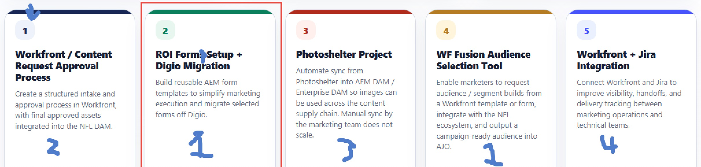
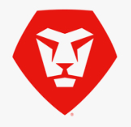

NFL Fan Engagement Marketing · Proposed Program Roadmap
Five Priority Projects, One Coordinated Delivery Plan
Recommended sequencing keeps ROI Forms as the AEM foundation project, starts Workfront intake approvals in two phases for DAM governance stabilization, and begins PhotoShelter as a fast early sprint. Audience Selector Tool and Workfront + JIRA Integration are confirmed with planning in progress.

Recommended High-Level Gantt
May 25 – Aug 23, 2026 · 13 Weeks (W1 = May W4, W13 = Aug W4) · Phases vertically staggered · Dates illustrative
Discovery
Build – ROI Forms
Build – Intake
Build – Photoshelter
QA / UAT
✓ Go-live
May W4
June
July
August
W1
W2
W3
W4
W5
W6
W7
W8
W9
W10
W11
W12
W13
#1 · ROI Forms Transformation · AEM
Centralized AEM Forms foundation, AWS Lambdaintegration, reusable forms & fan data ingestion

#2 · AEM Intake Forms & Workfront Approvalmetadata enforcement, and DAM routing
PHASE 1 · W3–W4
|
PHASE 2 · W5–W12
Phase 1
Phase 2
#3 · Photoshelter → AEM DAM Sync
High-volume image ingestion and synchronizationinto governed AEM / Enterprise DAM
#4 · WF Fusion Audience Selection Tool
Request audience / segment builds from Workfront,output campaign-ready audience into AJO
⏳ Planning in Progress · Timeline TBD
#5 · Workfront + JIRA Integration
Connect Workfront and Jira to improve visibility,handoffs, and delivery tracking
⏳ Planning in Progress · Timeline TBD
Sequencing Recommendation
- ROI Forms (#1) — Discovery W1, Build W1–W7, QA W7–W8, Go-live end W8.
- AEM Intake (#2) Phase 1 — Discovery W3, Build W3–W4, QA W4, Go-live end W4.
- AEM Intake (#2) Phase 2 — Discovery W5, Build W5–W11, QA W11–W12, Go-live end W12.
- Photoshelter (#3) — Discovery W3, Build W3–W5, QA W5–W6, Go-live end W6.
- #4 & #5 — Planning in progress; timelines locked after W3 discovery findings.
Overlap Guardrails
- All phases shown sequentially — Discovery → Build → QA / UAT → Go-live, fully separated visually.
- Avoid triple-concurrent UAT across all workstreams.
- Protect shared SMEs across AEM, Fusion, Workfront, DAM governance, and NFL teams.
- TBD items (#4, #5) must not add to the W1–W4 team load.